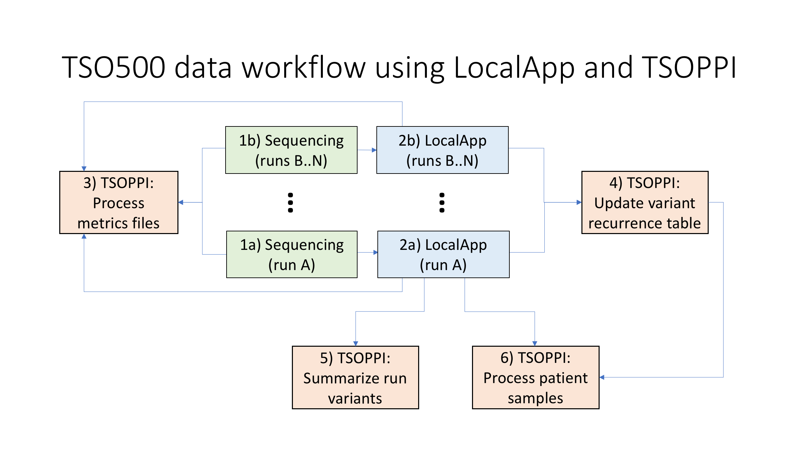

Getting started¶
Prerequisites¶
All of TSOPPI’s tools require files generated by Illumina’s TSO500 LocalApp software on input. Paths to LocalApp output directories are used as input parameters for multiple TSOPPI tools, which rely on the standard LocalApp output directory structure when locating particular files. (Altering the LocalApp output directory structure is therefore not recommended if TSOPPI is to be used.)

Similarly to the LocalApp software, TSOPPI is available as a TSOPPI Docker image and as a TSOPPI Singularity image. Any system able to run the LocalApp software should therefore be able to run TSOPPI as well (TSOPPI should generally have lower hardware requirements).
Some of TSOPPI’s output is meant to be used with IGV, but none of the tools requires IGV in order to be run.
Individual TSOPPI tools in the data analysis workflow¶
TSO500 sequencing (1) and primary analysis with LocalApp (2) are necessary prerequisites for running TSOPPI.
All metric output generated by the LocalApp, as well as some of the core metrics generated during the sequencing, can be visualized by the metrics plotting tool (3). The resulting plots can aggregate metric information across an arbitrary number of runs, which can be useful for spotting outlier samples and/or runs, and for monitoring long-term trends in the sequencing and primary analysis outputs. File “<output_directory>/intermediate_metrics_files/master_metrics_table.tsv” contains all the aggregated metrics data in a text format (suitable for import into in e.g. R or Excel).
The variant summarization tool (5) can be used to aggregate variant information across all samples (represented by “[LocalApp_run_output]/Results/…/*_CombinedVariantOutput.tsv” files) processed in a given sequencing run. This includes TBM, MSI, CNV, fusion and splice variant information, but only for variants that are deemed reportable by the LocalApp software (notably, the somatic/non-somatic status of the various genomic events might be re-evaluated during the post-processing, copy number losses are never reported by the LocalApp, and LocalApp-reported copy number gains are not adjusted for tumor content).
The core TSOPPI functionality, post-processing of matched samples available for a given patient (tumor DNA and/or normal DNA and/or tumor RNA), is made available via the sample data post-processing (6) tool. This tool aggregates variant information across input samples, provides the initial variant annotation and prioritization of called small variants with help of PCGR/CPSR and builds on LocalApp’s copy number output. Sample-wise QC metrics, IGV html links files, whitelist information and sample concordance outputs are also generated by this tool.
The variant recurrence table update (4) tool can be used to summarize small variant recurrence information across an arbitrary number of LocalApp run outputs. This information can be utilized during the patient sample post-processing step, which greatly enhances the ability to identify recurrent artifacts and germline variation in the analyzed samples.
TSO500 LocalApp¶
TSOPPI is currently being developed for LocalApp version 2.2.0.12. While older versions of the LocalApp software might be (and likely are) fully compatible with TSOPPI, systematic testing is not being done in order to ensure that*.
To learn more about the LocalApp software, please visit Illumina’s dedicated documentation site.
(*Please note that prior to version 2.2.0, LocalApp used gene symbol “MYCL1” instead of “MYCL” during CNV analysis. This can be taken into account during DNA sample post-processing by setting the ‘–localapp_version’ parameter to value “2.0.1.4”.)
TSOPPI Docker image¶
TSOPPI is primarily developed as a Docker image, under ‘Docker Engine - Community’ version 19.03.8.
A TSOPPI Docker image can be loaded from the supplied tar archive and subsequently referred to by its “[REPOSITORY]/[TAG]” combination when its individual tools are being run:
$ sudo docker load tsoppi_v0.3_main_2022_02_28.tar
$ sudo docker image ls
REPOSITORY TAG ...
inpred/tsoppi_main v0.3 ...
$ [sudo] docker run \
--rm \
-it \
-v /hs_prefix_path:/inpred/data \
inpred/tsoppi_main:v0.3 \
python <tool_script.py> \
argument_1 \
... \
argument_n \
--host_system_mounting_directory /hs_prefix_path
For the container software to gain access to sample files located on the host system, an appropriate host system directory has to be mounted with the “-v” option (all input and output files need to be located somewhere inside the mounted host system directory). In the example above, the host system directory “/hs_prefix_path” is mounted as “/inpred/data” within the container. While the container mounting point should not be changed, an appropriate host system mounting point needs to be selected by the user and specified via the ‘–host_system_mounting_directory’ parameter.
TSOPPI Singularity image¶
Singularity images are generated (with Singularity version 3.4.2-1.el7) by conversion from a corresponding Docker image.
The following command structure can be used for directly executing TSOPPI Singularity images in the SIF format:
singularity exec \
--no-home \
-B /hs_prefix_path:/inpred/data \
-W <working_directory> \
<SINGULARITY_IMAGE_PATH> \
python <tool_script.py> \
argument_1 \
... \
argument_n \
--host_system_mounting_directory /hs_prefix_path
For the container software to gain access to sample files located on the host system, an appropriate host system directory has to be mounted with the “-B” option (all input and output files need to be located somewhere inside the mounted host system directory). In the example above, the host system directory “/hs_prefix_path” is mounted as “/inpred/data” within the container. While the container mounting point should not be changed, an appropriate host system mounting point needs to be selected by the user and specified via the ‘–host_system_mounting_directory’ parameter.
Contact¶
daniel.vodak [AT] medisin.uio.no
(last updated: 2022-03-03)